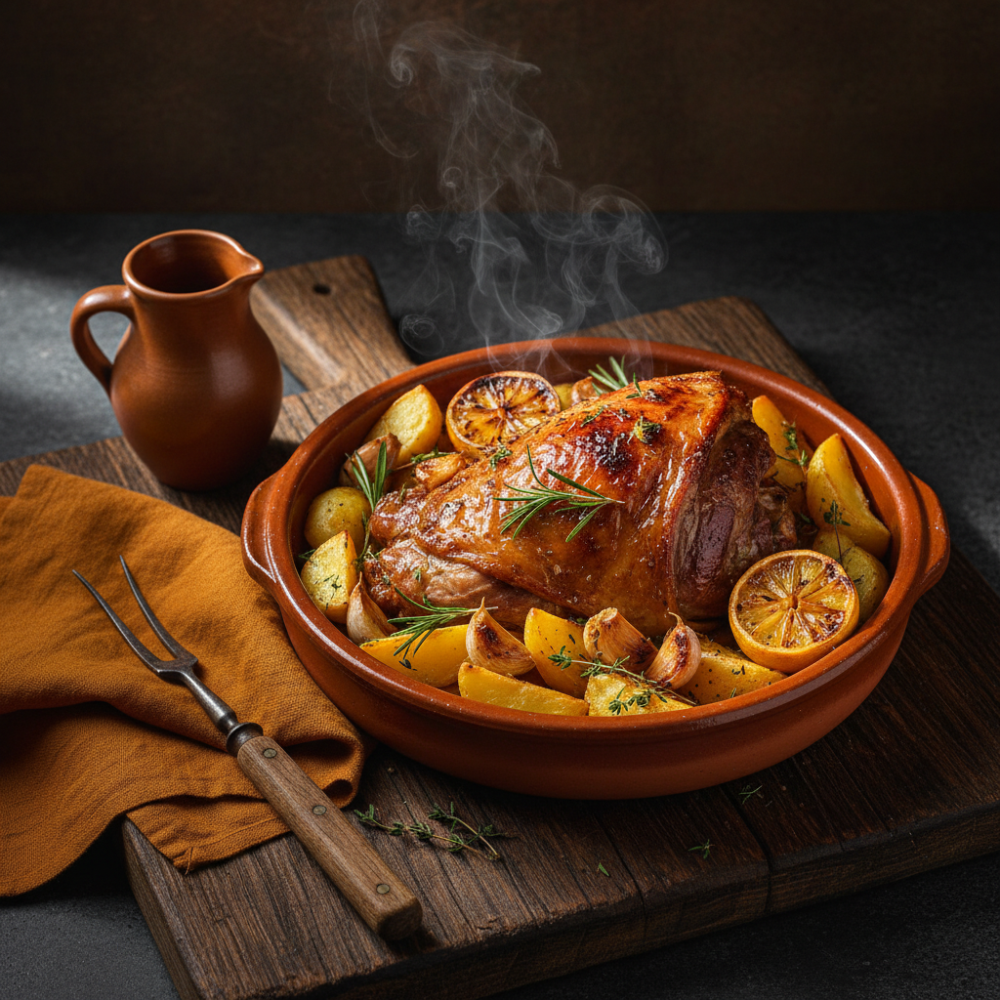
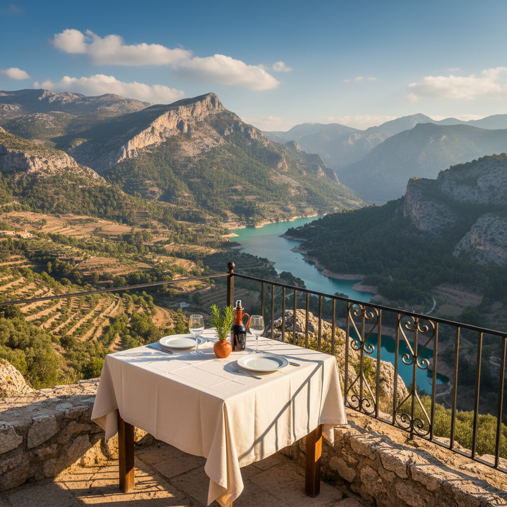
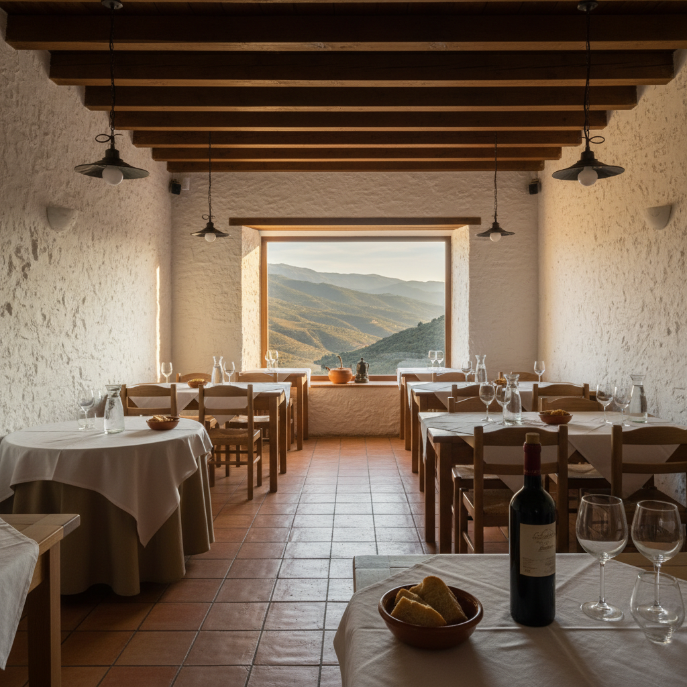
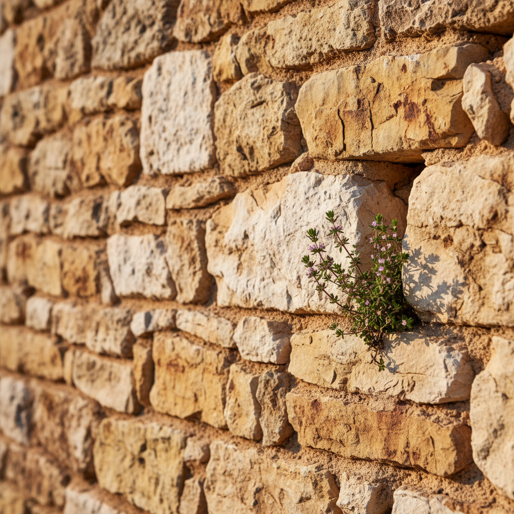
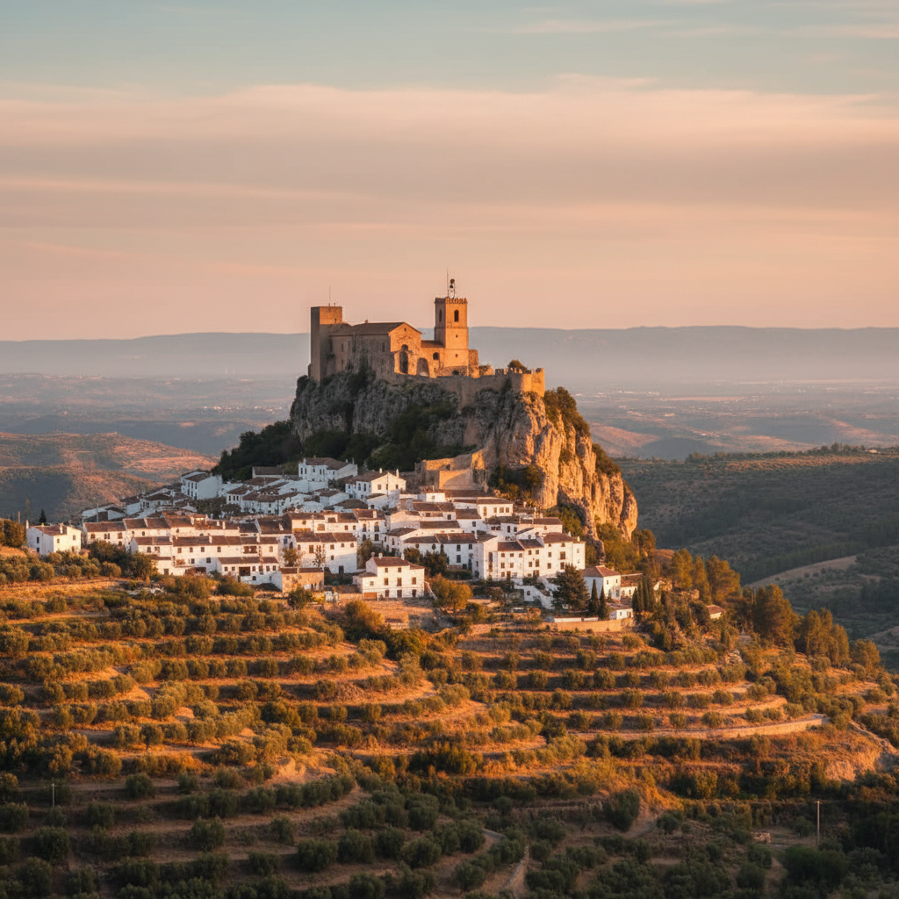
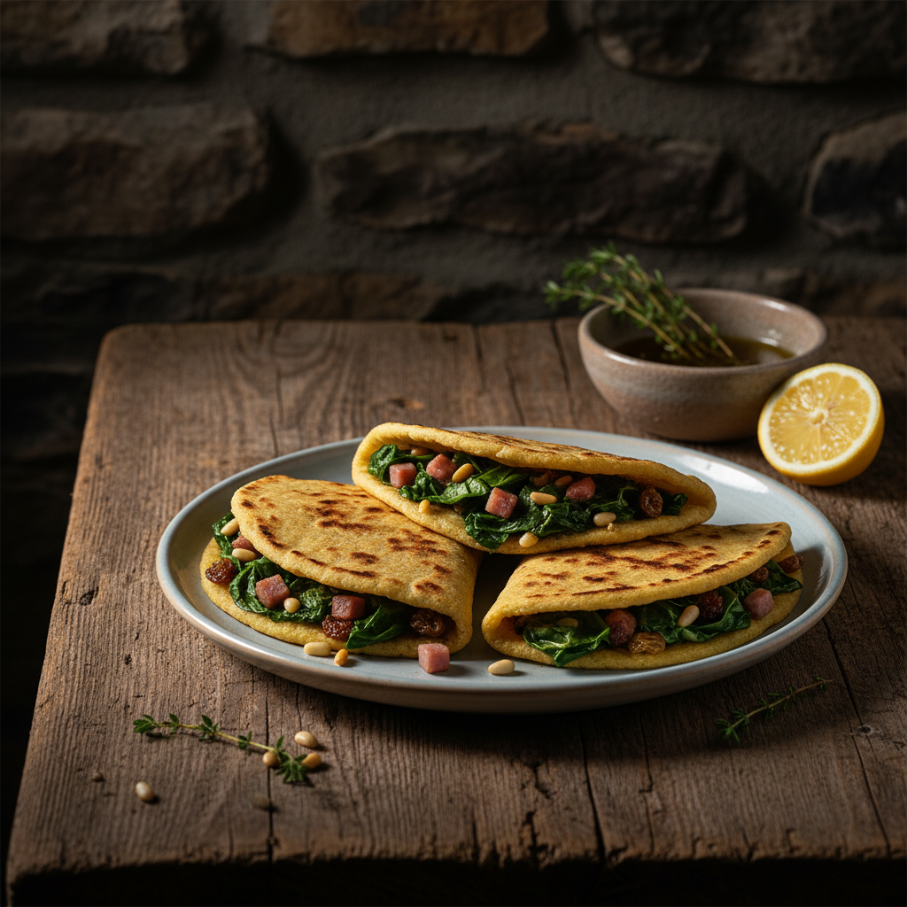

— Plato I
Cordero al horno de leña
Pierna y costillar de cordero asado lento sobre cama de patata, ajo entero y romero fresco. Se sirve con su jugo y limón asado.
Carta tradicionalsegún mercado

Una terraza suspendida sobre el valle, una cocina que sigue las recetas de la Marina Baixa, y una mesa que ya conocen miles de visitantes de toda Europa.
L'Hort lleva más de tres décadas abierto en El Castell de Guadalest, uno de los pueblos más visitados de España. En todo este tiempo no hemos cambiado la receta de la olleta, ni la forma de hornear el cordero, ni la mesa con mejor vista de la casa.
Macarena cocina cada día como lo hacía su madre. Toni atiende la sala como quien recibe en su propia casa. El resto lo hace el valle.



Cocina tradicional valenciana sin atajos: olleta de blat a fuego lento, minxos hechos a mano cada mañana, cordero al horno de leña, y un menú diario a 20 € que cambia con la huerta y la temporada.

Pierna y costillar de cordero asado lento sobre cama de patata, ajo entero y romero fresco. Se sirve con su jugo y limón asado.

Tortas finas de harina de maíz rellenas de acelgas, piñones y pasas. Receta tradicional de los pueblos del valle, hechas a mano cada mañana.
La terraza de L'Hort se asoma directa al valle de Guadalest, con la sierra de Aitana enfrente y el embalse turquesa abajo. Cuando hace bueno, comer aquí es una de esas cosas que un turista recuerda años después.
Reserva con tiempo. Las mesas con vista directa son contadas, y se llenan.
Reservar online es lo más rápido. Si prefieres llamar, contestamos de 10 a 17 h todos los días excepto sábado.
Para grupos de más de 8 personas, llámanos directamente al 965 88 52 69 y te atendemos sin esperas.
Calle de la Virgen, 1
03517 El Castell de Guadalest · Alicante
A 45 minutos de Benidorm y de la costa.